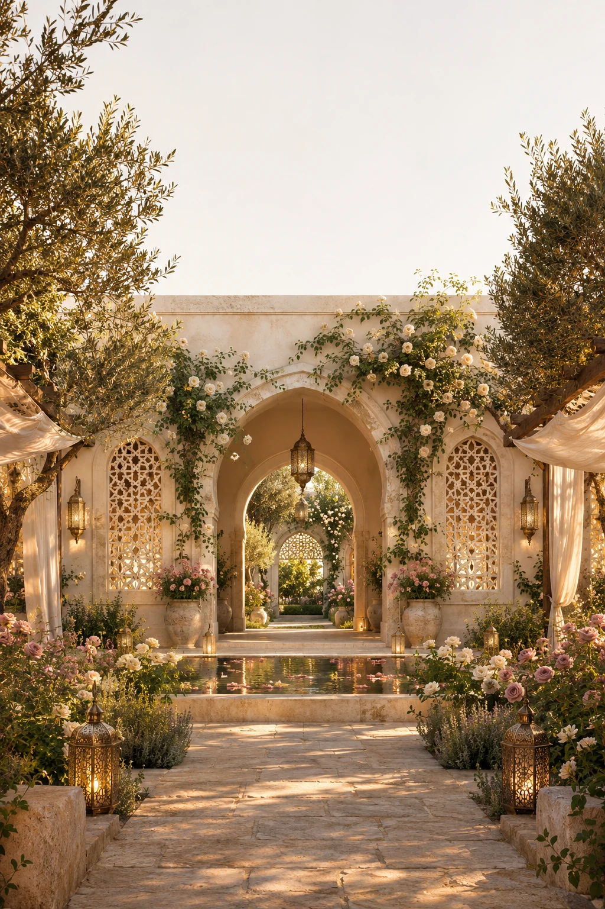
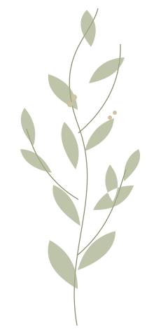
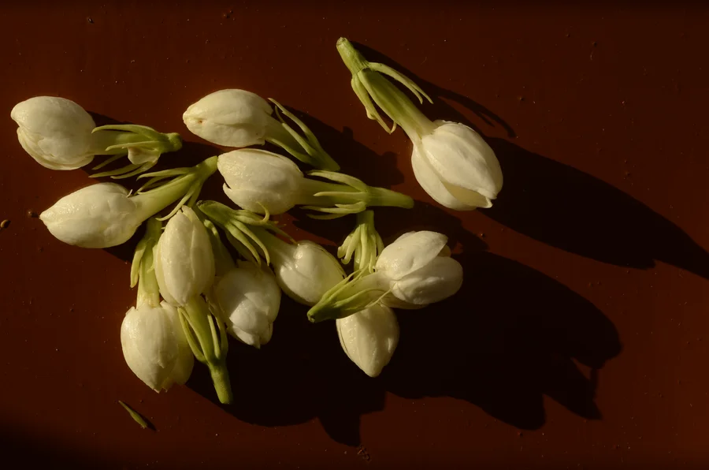

AN INVITATION, WITH LOVEYour reply ↗

WITH GRATITUDE TO ALLAH & THE LOVE OF OUR FAMILIES
Amina &
Zayd
20 FEBRUARY 2027 SATURDAY · NIKAH & WALIMA

For all the days
that come after.
THE PEOPLE WHO MAKE IT HOME
DEAR FAMILY, DEAR FRIENDS,
Before there was an us,
there was all of you.
To the families who raised us with love, and the people who have made us feel at home: thank you for bringing us to this day.
As we begin our life together, we want our celebration to hold the things that matter most. Faith. Kindness. A little laughter. And the warmth of having you near.
With grateful hearts,
Amina & Zayd
You don’t need to bring the perfect words.
Your presence is the part we’re hoping for.

Not a perfect day.
A day full of our people.
THE PROMISE
NIKAH · MARRIAGE CEREMONY
A promise for
the everyday.
For the quiet mornings. The difficult days.
For choosing kindness, and choosing each other.
TOGETHER WITH OUR FAMILIES
Amina
&
Zayd
invite you to celebrate
their marriage
2027
A NEW CHAPTER. A SHARED LIFE.
THE INVITATION
Be with us
as our life begins.
- When
- Saturday, 20 February 2027
4:00 PM IST - Where
- The Garden House
Bengaluru, India
Fictional sample venue and programme.
Suggested arrival: 3:45 PM IST.
A welcome to every guest
Whether a Nikah is familiar or new to you, we’re grateful to share this day. In a real invitation, the hosts would confirm the ceremony arrangements and anything guests need to know.
THE GATHERING
WALIMA · WEDDING RECEPTION
A table made longer.
A family made larger.
Good food passed around. Familiar stories told again.
New faces becoming old friends.
There’s a little warmth waiting here.
We saved this place for you.
COME, SHARE OUR JOY
The Garden House
Saturday, 20 February 2027
Dinner & time together
Fictional sample venue and time. All times IST.
The day will be warmer with you in it.
WHAT WE HOPE TO GROW
OUR PRAYER FOR THE LIFE AHEAD
Kindness at the heart.
Peace at the door.
O Allah, bless our marriage with kindness, patience and understanding. Make our home a place of peace, generosity and welcome.
An original personal dua, not a quotation from scripture.
And may there always be room for one more.